Featured
Computer vision
Shipped
Age & Gender Estimation
A two-head MobileNetV2 that predicts age and gender from a single face — with a fairness audit and a Streamlit demo.
- Gender accuracy
- 93.54%
- Age MAE
- 5.17 yr
- Gender F1
- 0.933
- Joint regression and classification on UTKFace in PyTorch.
- Fairness audit across five ethnicity groups: 88.7%–94.6% accuracy.
- Streamlit app for image upload and live webcam inference.

UTKFace · MobileNetV2 · PyTorch